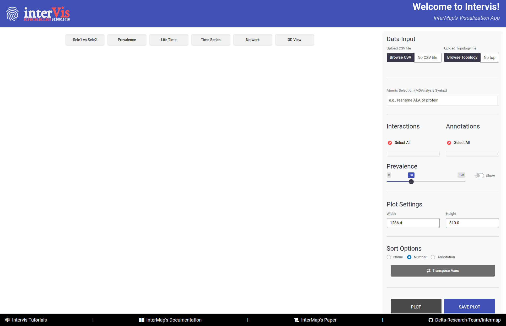
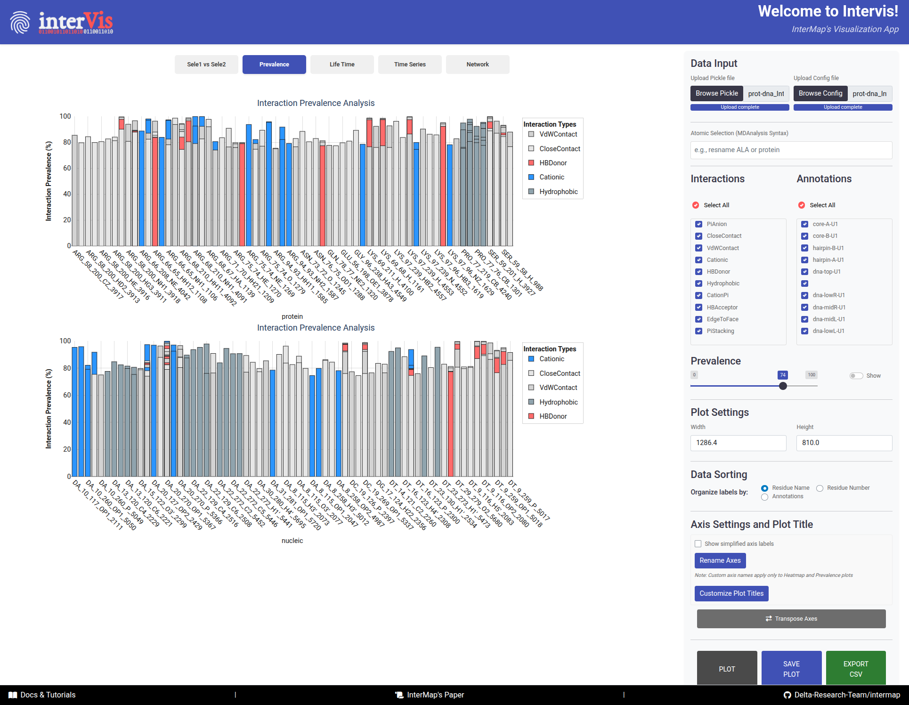
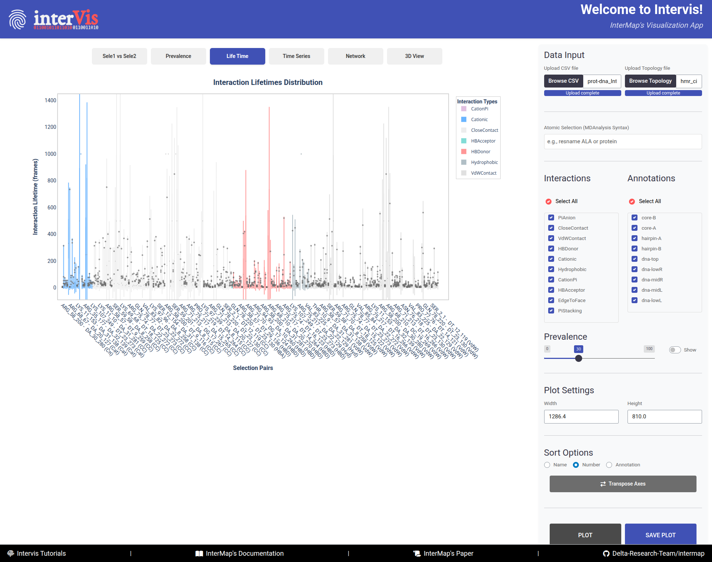
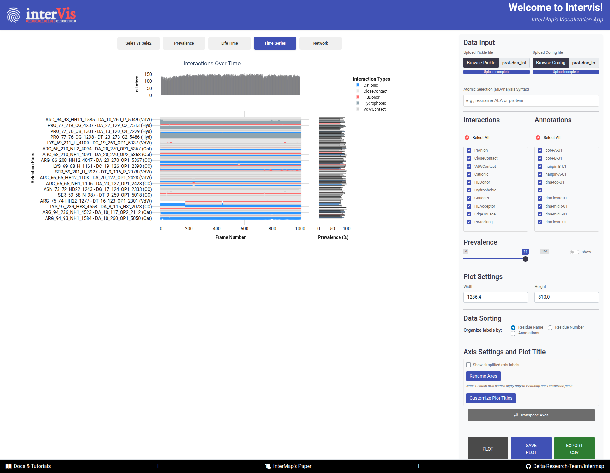
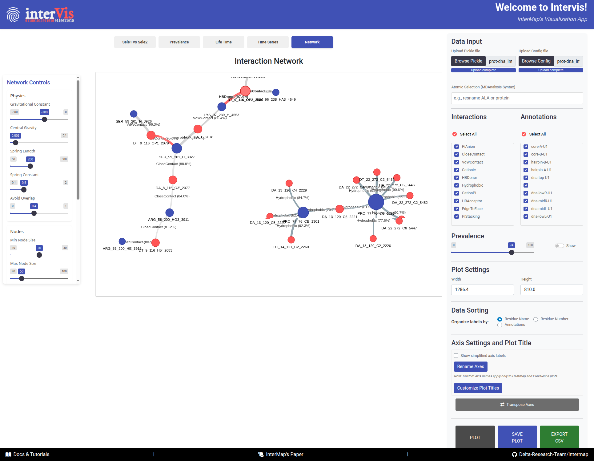

InterVis (Visualizations)
InterMap comes with a local, interactive Shiny application named InterVis, which allows users to explore the
interactions computed by the tool. This user-friendly web interface simplifies the analysis and interpretation of
molecular interaction data. No internet connection is required to run the app.
1. Launching InterVis¶
Once InterMap is installed and your virtual environment is activated, run the following command from the terminal:
This will automatically launch the InterVis server and open your default web browser with the app's interface.

InterVis interface is composed of two main areas: the Control Panel (right side) and the Visualization Panel (
left side).
The InterVis interface consists of two main areas:
-
The
Control Panel(right side) contains tools for loading and filtering data. It is always visible for quick access and its effects are reflected in the visualizations after clicking thePlotbutton. -
The
Visualization Panel(left side) displays different types of visualizations. It is organized into tabs for smooth navigation and allows users to explore interaction data interactively.
2. Uploading Data¶
InterVis needs two files before attempting to visualize the interactions: the .PICKLE file containing the interaction
data and the .CFG file with the configuration parameters used during the InterMap analysis. You can upload these files
using the Control Panel on the right side of the interface.
-
Click on
Browse PICKLE/Browse Configto upload these file. Alternatively, you can drag and drop them into the designated area. -
The time Intervis takes to upload the
.PICKLEand show the plots depends on the amount of data stored in the file and your computer's performance.
Absolute paths in config file before uploading
Before uploading the config file to InterVis, make sure that the paths leading to the topology and trajectory(ies) exist and are specified as absolute paths.
3. Configuring Visualizations¶
Once the files are uploaded, you can configure the visualizations that will render in the different tabs of the
Visualization Panel using the following sections under the Control Panel.
Atomic Selections
- This textbox allows to filter interactions using the MDAnalysis selection syntax. Only atoms/residues that match the selection will be considered in the visualizations.
MDAnalysis Selection Examples
Interactions
Upon uploading the .PICKLE file, InterVis will automatically detect all types of interactions detected and display their names in this panel.
- You can select one or multiple types. Click
Select Allto mark them all.
Annotations
Upon uploading the .PICKLE file, InterVis will automatically detect all stored annotations and display their names in this panel.
-
You can then filter the visualized data based on the custom annotations defined in the configuration file.
-
You can select one or multiple annotations. Click
Select Allto mark them all.
Prevalence
When the files are loaded, InterVis automatically assigns a default prevalence threshold of 30%. Interactions less prevalent than this cutoff are not rendered. You can adjust this value to filter out interactions based on their prevalence in a range from 0 to 100%.
- The
Showoption allows you to show/hide numeric values on plots.
4. Plot Settings and Customization¶
InterVis provides several advanced configuration options to customize your visualizations:
Plot Dimensions
You can customize the size of your plots to fit your screen or presentation needs:
Width: Set the plot width in pixels (default: automatically adjusted to your screen)Height: Set the plot height in pixels (default: automatically adjusted to your screen)
These settings apply to all visualization tabs and help optimize the viewing experience for different screen sizes or export requirements.
Data Sorting
Control how labels are organized in your visualizations through the Organize labels by option:
Residue Name: Sort alphabetically by residue type (ALA, ARG, ASP, etc.)Residue Number: Sort numerically by residue numberAnnotations: Sort by custom annotations defined in your configuration file
This feature helps you identify patterns more easily by organizing data in the most meaningful way for your analysis.
Axis Settings and Plot Titles
Customize axis labels and plot titles for publication-ready figures:
Simplify Axis Labels¶
- Enable this checkbox to show simplified axis labels without detailed atom/residue information
- Useful for creating cleaner visualizations for presentations
Rename Axes¶
- Click the
Rename Axesbutton to reveal custom axis input fields - Enter your desired names for X-Axis and Y-Axis titles
- Click
Applyto update the axes
Scope
Custom axis names apply only to Heatmap and Prevalence plots
Customize Plot Titles¶
- Click the
Customize Plot Titlesbutton to reveal title customization options - You can customize titles for all five visualization types:
Heatmap Plot(default: "Interaction Heatmap")Prevalence Plot(default: "Interaction Prevalence Analysis")Lifetime Plot(default: "Interaction Lifetimes Distribution")Time Series Plot(default: "Interactions Over Time")Network Plot(default: "Interaction Network")
- Enter your desired titles and click
Apply
Transpose Axes¶
- Click the
Transpose Axesbutton to swap X and Y axes in the Heatmap view - The button highlights when transpose is active
- Useful for alternate viewing perspectives or when one selection has many more elements than the other
5. Supported Visualizations¶
Sele1 vs Sele2
In this Tab, an overview of all interaction pairs between two selections is reported.

The Sele1 vs Sele2 tab provides an overview of all interaction pairs between two selections.
-
X-axis``: Atoms/Residues of Selection 1
-
Y-axis: Atoms/Residues of Selection 2 -
Cells - Color: Interaction type (following an interaction priority system — if multiple interactions occur, the most relevant is shown).
- Number: Interaction prevalence (shown upon activation of the
Showoption adjacent to thePrevalencefilter).
Hover
- Sel1: Atom/Residue of the first selection
- Note1: Annotation corresponding to Sel 1
- Sel2: Atom/Residue of the second selection
- Note2: Annotation corresponding to Sel 2
- Interaction: Type of interaction
-
Prevalence: Percentage of frames with this interaction
-
Transpose Buttonto swap X/Y axes for alternate views
Interactions Prevalence
In this Tab, the prevalence of interactions is visualized as a bar chart. In the top panel, the interactions of Selection 1 are shown, while the bottom panel focuses on Selection 2.

The Prevalence tab visualizes the prevalence of interactions as a bar chart, with Selection 1 in the top panel and Selection 2 in the bottom panel.
-
X-axis: Components from Selection 1/Selection 2 -
Y-axis: Prevalence (%) -
Bars:- Color: Interaction type
- Height: Prevalence percentage
-
Hover:
- Selection_1: Prevalence of interaction in Selection 1
- Selection_2: Prevalence of interaction in Selection 2
- Interaction: Type of interaction
- Prevalence: Percentage of frames with this interaction
- Annotation: Custom annotation for the interaction
Interaction Lifetimes
box plots representing the distribution of interaction lifetimes.

The Life Time tab presents box plots displaying the distribution of interaction lifetimes across the trajectory.
-
X-axis: Interaction pairs (Selection 1 – Selection 2) -
Y-axis: Duration of interactions (in frames) -
Color: Interaction type -
Hover:
- Pair: Selection 1 – Selection 2
- Interaction: Type of interaction
- Prevalence: Percentage of frames with this interaction
- Lifetime: Number of frames the interaction was present
- Frame Range: Start and end frames where the interaction was observed
Time Series
Time series plot showing interaction presence over time.

The Time Series tab displays a time series plot showing the presence of interactions over time.
-
Main PanelX-axis: Frame numberY-axis: Interaction pairsDots: Interaction presence
-
Top Histogram- Number of interactions per frame
-
Side Histogram- Prevalence of interactions across frames
Hover:
- Frame: Frame number
- Selection Pair: Interacting residues
- Interaction: Type of interaction
- Prevalence: Percentage of frames with this interaction
Network
This tab visualizes the interaction network between two selections, where nodes represent components and edges represent interactions.

The Network tab visualizes the interaction network between two selections, where nodes represent components and edges represent interactions.
Interpretation Guide:
-
Nodes:- 🔵 Blue = Selection 1 components
- 🔴 Red = Selection 2 components
- Size = Number of connections (degree)
-
Links:Color: Interaction typeWidth: Interaction prevalenceLength: Inversely related to prevalence (stronger interactions appear shorter)
Hover:
- Node information: Component name, number of connections
- Edge information: Interaction type, prevalence percentage
Network Controls Panel¶
When you navigate to the Network tab, an additional control panel automatically appears on the left side of the screen. This panel provides advanced physics and visual customization options for fine-tuning the network layout.
The Network Controls panel appears automatically when viewing the Network tab, offering fine-grained control over the network layout and appearance.
Physics Controls¶
Fine-tune the force-directed layout algorithm:
-
Gravitational Constant(-500 to 0, default: -200)- Controls the attractive force between nodes
- More negative values = stronger attraction
- Use lower values (closer to 0) for more spread-out networks
-
Central Gravity(0 to 0.1, default: 0.005)- Pulls all nodes toward the center of the visualization
- Higher values = tighter, more compact networks
- Lower values = more distributed layouts
-
Spring Length(50 to 500, default: 200)- Sets the natural resting distance between connected nodes
- Larger values = more space between nodes
- Smaller values = more compact arrangements
-
Spring Constant(0.1 to 2.0, default: 0.5)- Controls the stiffness of connections between nodes
- Higher values = stiffer springs, more rigid structure
- Lower values = more flexible, fluid layouts
-
Avoid Overlap(0 to 1, default: 0.8)- Prevents nodes from overlapping each other
- Higher values = stronger repulsion, better separation
- Set to 0 to allow overlapping (not recommended)
Node Controls¶
Customize node appearance:
-
Min Node Size(10 to 30, default: 20)- Minimum size for nodes with few connections
- Ensures small nodes remain visible
-
Max Node Size(40 to 100, default: 50)- Maximum size for highly connected hub nodes
- Prevents large nodes from dominating the visualization
Edge Controls¶
Customize edge (link) appearance:
-
Min Edge Width(1 to 10, default: 5)- Minimum width for edges with low prevalence
- Ensures all connections remain visible
-
Max Edge Width(10 to 30, default: 15)- Maximum width for edges with high prevalence
- Visual emphasis on strong interactions
Simulation Controls¶
Control the physics simulation:
-
Stabilization Iterations(100 to 2000, default: 1000)- Number of physics simulation steps before displaying the network
- Higher values = more stable final layout (but slower)
- Lower values = faster rendering (but may be less stable)
-
Physics Enabled(Toggle switch)On: Physics simulation runs continuously; nodes respond to forcesOff: Disable physics for manual node positioning and static layout
Apply Settings¶
After adjusting any parameters, click the Apply Settings button to update the network visualization with your new configuration. The network will re-stabilize using the new physics parameters.
Network Optimization Tips
For large networks: ReduceStabilization Iterationsto 200-500 for faster renderingFor dense networks: IncreaseSpring Lengthand reduceCentral Gravityto spread nodes apartFor publication figures: DisablePhysics Enabledafter finding a good layout, then manually adjust node positionsFor exploring dynamics: KeepPhysics Enabledand adjust forces in real-time to see immediate effectsFor clearer visualization: IncreaseAvoid Overlapto 1.0 to ensure perfect node separation
6. Footer Resources¶
The footer provides quick access to important resources:
Docs & Tutorials: Complete InterMap documentation and step-by-step tutorialsInterMap's Paper: Scientific publication with methodology and validationDelta-Research-Team/intermap: Source code, issue tracker, and latest releases on GitHub